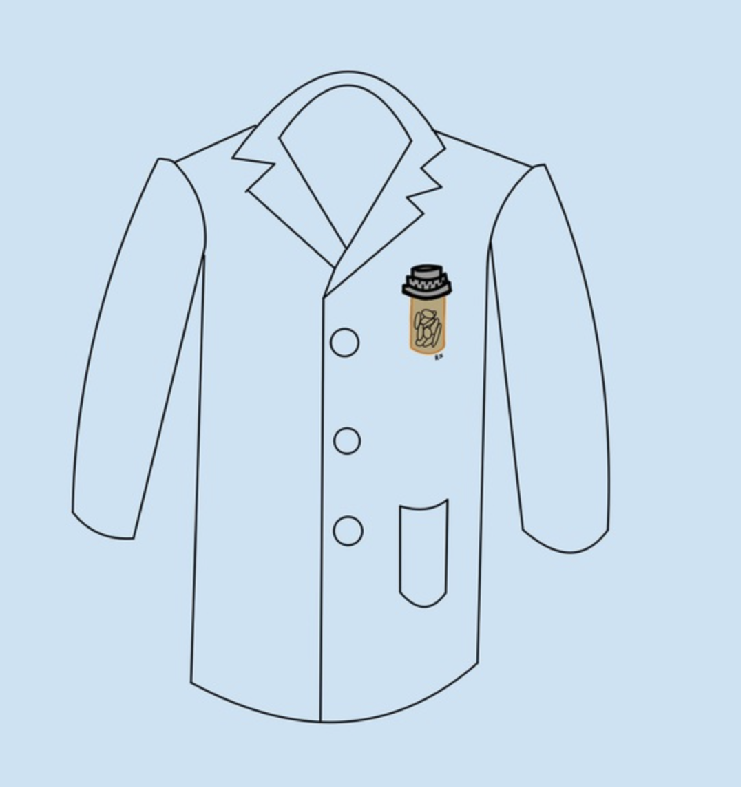

PharmAssist
At TreeHacks, we created an app that can take a picture of a medication and the cheapest alternative and its nearest location would pop up. This idea was inspired by those in the lower-middle class to poverty who do not feel like in they can afford what big pharmaceutical companies are pushing as treatment. This experience was really fun because I learned a lot about the medical field, and I made so many new friends from different schools and places. Plus, seeing the Stanford campus was so cool!!